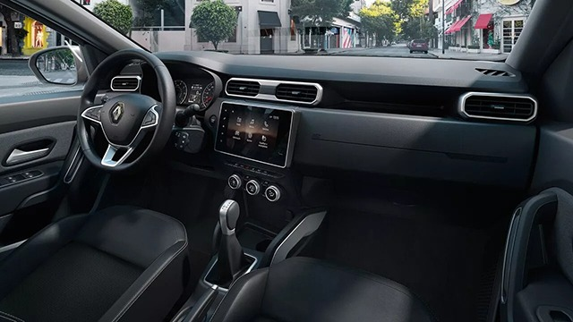
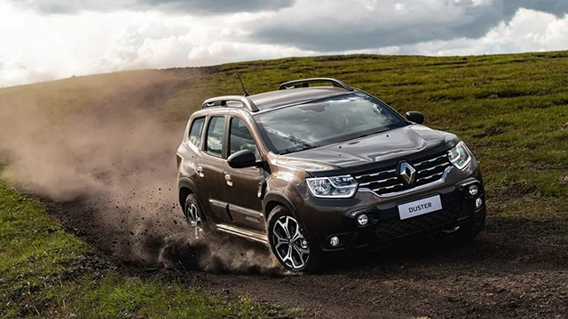

|

Interior bonito é ítem de série O Duster é, sem dúvida, a melhor opção da categoria. E você não vê isso só do lado de fora. Por dentro está tudo incrível: painél, volante com comando satélite, ar-condicionado digital, bancos com Revestimento Premium e muito mais.
|

Design ainda mais robusto Quando você pensa em robustez, você lembra do Duster. E quando se fala em design, também. Altura do solo imponente (237 mm), faróis com luzes de circulação em LED, linhas que se impõem em qualquer lugar.
|
Tecnologia multifuncional Com o sistema multimídia Easy Link, você emparelha seu celular usando o Android Auto ou o Apple CarPlay em uma tela de 8 polegadas. Quer mais? Ainda dá para projetar 4 câmeras com Sistema Multiview na hora da baliza.
|